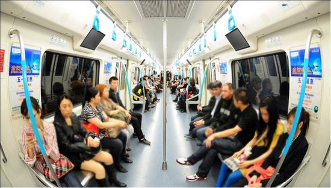

Best Solutions
We make choices everyday that can help reduce air pollution.
At Home
- Conserve energy - turn off appliances and lights when you leave the room.
- Recycle paper, plastic, glass bottles, cardboard, and aluminum cans. (This conserves energy and reduces production emissions.)
- Keep woodstoves and fireplaces well maintained. You should also consider replacing old wood stoves with EPA-certified models.
- Plant deciduous trees in locations around your home to provide shade in the summer, but to allow light in the winter.
- Buy green electricity-produced by low-or even zero-pollution facilities.
- Connect your outdoor lights to a timer or use solar lighting.
- Wash clothes with warm or cold water instead of hot.
- Lower the thermostat on your water heater to 120F.
- Use low-VOC or water-based paints, stains, finishes, and paint strippers.
- Test your home for radon-a dangerous, radioactive gas that is odorless and tasteless.
- Choose not to smoke in your home, especially if you have children. If you or your visitors must smoke, then smoke outside.

Buy Smart
- Buy ENERGY STAR products, including energy efficient lighting and appliances. They are environmentally friendly products.
- Choose efficient, low-polluting models of vehicles.
- Choose products that have less packaging and are reusable.
- Shop with a canvas bag instead of using paper and plastic bags.
- Buy rechargeable batteries for devices used frequently.

Drive Wise
- Plan your trips. Save gasoline and reduce air pollution.
- Keep tires properly inflated and aligned.
- In the summertime, fill gas tank during cooler evening hours to cut down on evaporation. Avoid spilling gas and don't "top off" the tank. Replace gas tank cap tightly.
- Avoid waiting in long drive-thru lines, for example, at fast-food restaurants or banks. Park your car and go in.
- When possible, use public transportation, walk, or ride a bike.
- Get regular engine tune ups and car maintenance checks (especially for the spark plugs).
- Use an energy-conserving (EC) grade motor oil.
- Ask your employer to consider flexible work schedules or telecommuting.
- Report smoking vehicles to your local air agency.
- Join a carpool or vanpool to get to work.